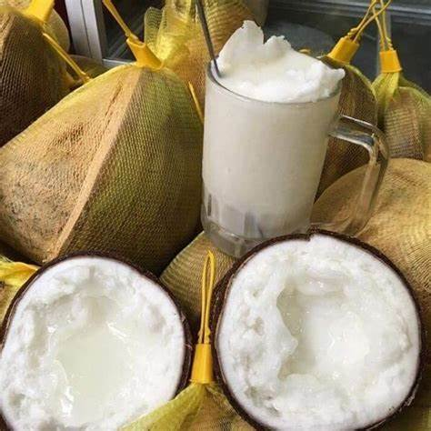

Chào bạn, tôi là Thạch Chanh Sê Rây
Tôi sinh năm 2007, hiện đang là học sinh trường PT DTNT THPT Trà Vinh.Tôi là một người đam mê hóa học. Hiện tại, tôi sống ở Cầu Kè, nơi nổi tiếng với những đặc sản độc đáo và văn hóa đa dạng.
Sở thích của tôi
- Chơi Game
- Chơi Cầu Lông
- Nghịch Máy Tính
Đặc sản của nơi tôi sống
- Dừa Sáp
Dừa sáp Cầu Kè là một trong những đặc sản nổi tiếng của vùng đất Trà Vinh, đặc biệt là huyện Cầu Kè. Đây là một loại dừa hiếm có, nổi bật với phần cơm dừa đặc biệt, có kết cấu giống như sáp, trắng ngà và mềm mại. Khi thưởng thức, người ăn sẽ cảm nhận được vị ngọt thanh, béo ngậy, không ngấy như các loại dừa thông thường. Chính vì vậy, dừa sáp Cầu Kè đã trở thành món ăn ưa chuộng không chỉ đối với người dân trong nước mà còn được xuất khẩu ra nước ngoài, trở thành đặc sản được yêu thích.
Cây dừa sáp không phải lúc nào cũng cho trái, và để thu hoạch được những quả dừa sáp đạt chất lượng, người nông dân ở Cầu Kè phải bỏ ra rất nhiều công sức. Việc trồng dừa sáp đòi hỏi kỹ thuật chăm sóc rất cao, từ việc chọn giống dừa cho đến công tác chăm sóc, bón phân. Đặc biệt, không phải tất cả các trái dừa trên cây đều có cơm dừa sáp, chỉ những trái dừa đạt chuẩn mới có thể tạo ra phần cơm đặc biệt này. Chính vì vậy, dừa sáp không chỉ có giá trị dinh dưỡng cao mà còn mang ý nghĩa đặc biệt đối với người trồng.
Dừa sáp Cầu Kè không chỉ được ăn tươi mà còn có thể chế biến thành nhiều món ăn ngon và hấp dẫn. Một số món đặc sắc như dừa sáp nạo dẻo, nước dừa sáp hoặc dùng dừa sáp trong các món tráng miệng hay làm nguyên liệu trong các món ăn. Mỗi món ăn từ dừa sáp đều mang một hương vị riêng biệt, sự kết hợp giữa độ ngọt tự nhiên và mùi thơm của dừa tạo nên một hương vị vô cùng đặc trưng và khó quên.
Không chỉ là một món ăn ngon, dừa sáp Cầu Kè còn là niềm tự hào của người dân Trà Vinh. Nó không chỉ giúp nâng cao giá trị kinh tế cho người dân địa phương mà còn góp phần làm phong phú thêm nền ẩm thực Việt Nam. Mỗi lần nhắc đến dừa sáp, người ta không chỉ nhớ đến một món ăn ngon mà còn là tình yêu, sự tỉ mỉ và công sức của người nông dân Cầu Kè trong việc gìn giữ và phát triển loại đặc sản này. Dừa sáp đã trở thành một phần không thể thiếu trong bản sắc ẩm thực của miền Tây Nam Bộ.

Để biết thêm về dừa sáp hãy nhấn vào đây
Hy vọng bạn sẽ có thêm thông tin về tôi và nơi tôi sống. Nếu bạn muốn kết nối hoặc có câu hỏi nào, đừng ngần ngại liên hệ qua thachchanhseray2007@gmail.com.